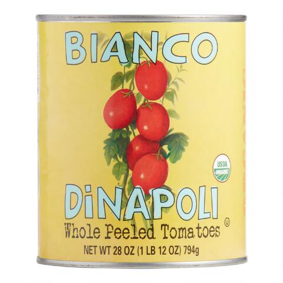

Simple Tomato Sauce

I'm not kidding when I say "Simple"
I'll prove it to you, here's what you'll need.
- A jar of nice whole tomatoes. Bianco DiNapoli is my favorite.
- An immersion blender
- Salt
- A fine mesh sieve
- Something for umami - fish sauce, worcesteshire, msg (optional)
- A dash of whatever vinegar you have on hand
Really not much to it! You can probably guess what's going on here but I'll list it out for you.
- Open the can of tomatoes and pulse a couple of times with the immersion blender.
- Canned tomatoes have a lot of exra liquid, run them through the seive to drain off some
- Season the strained tomatoes with salt and your choice of umami. A little bit goes a long way.
- Finish with a dash of vinegar. White wine vinegar works well.
There you have it. A simple sauce recipe!
Click here to return home.